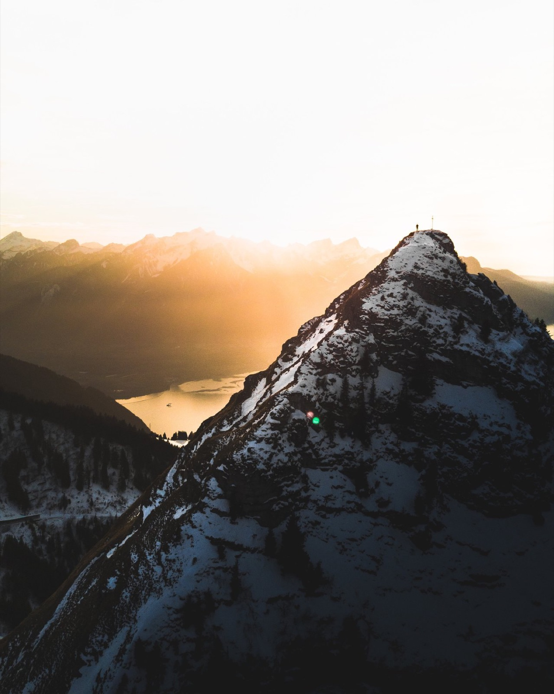
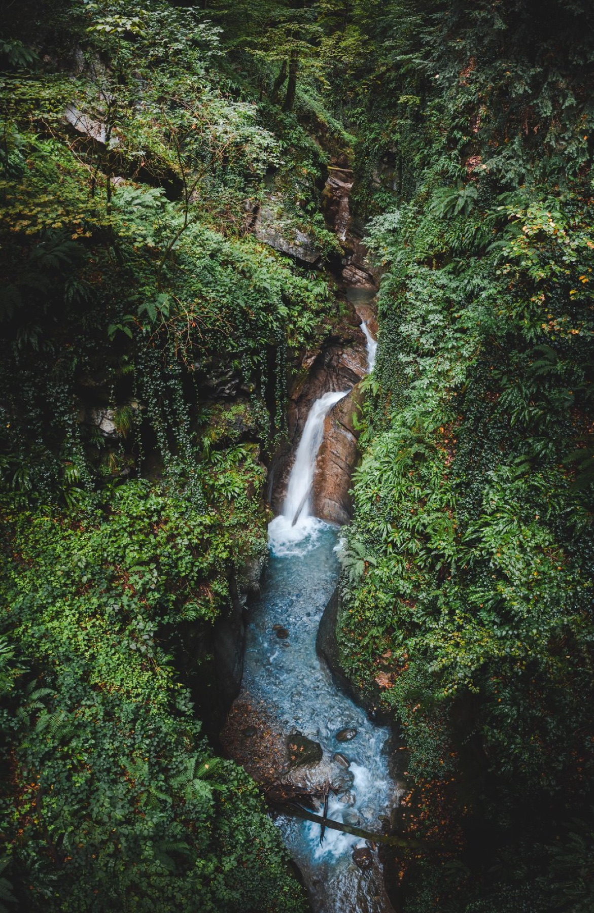
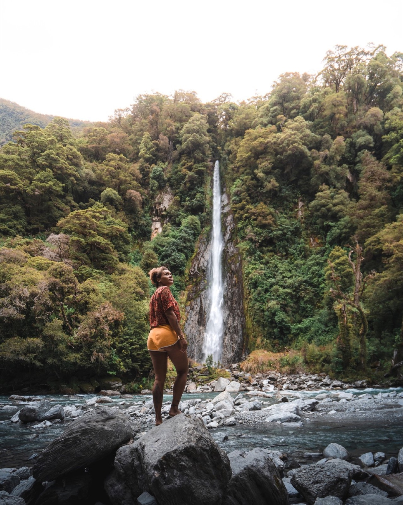
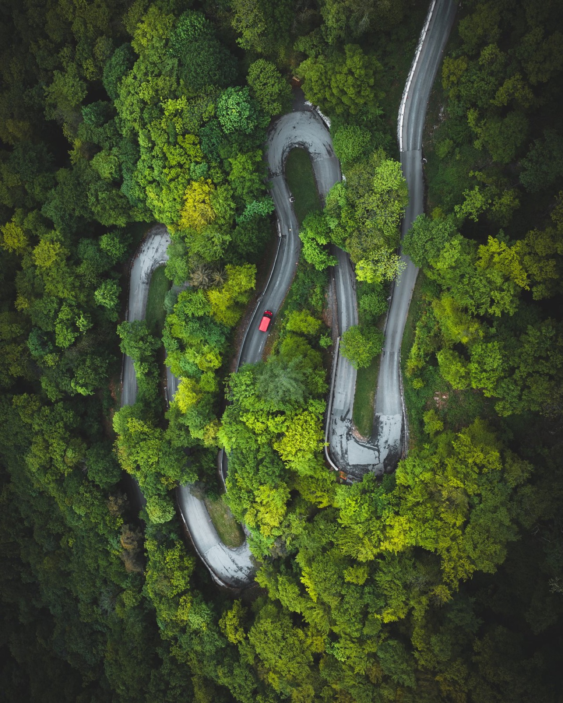
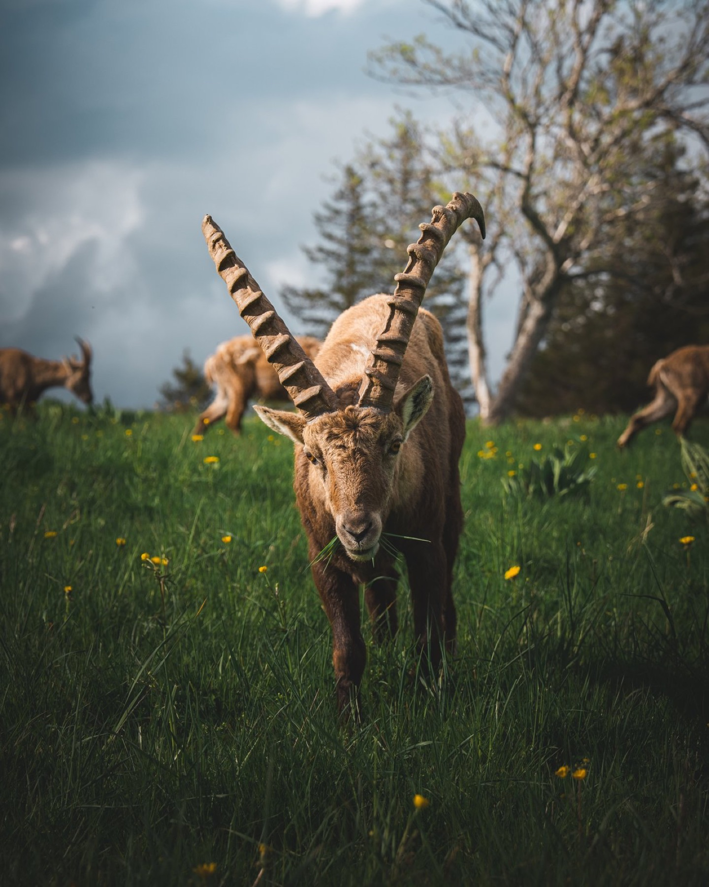
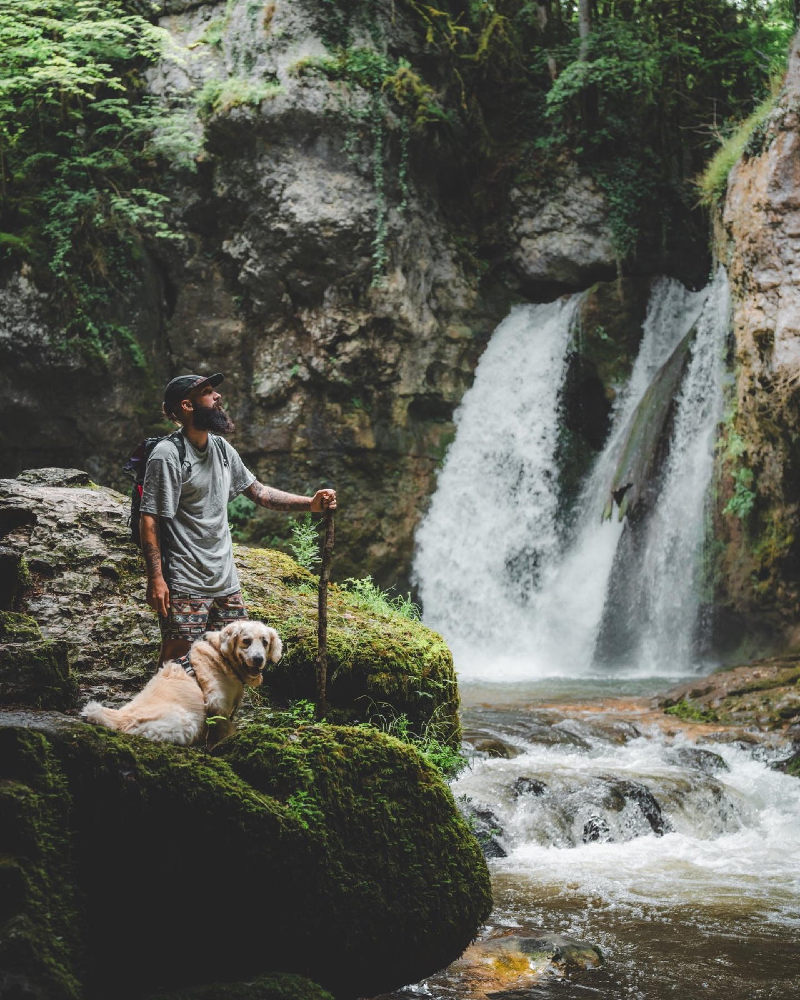
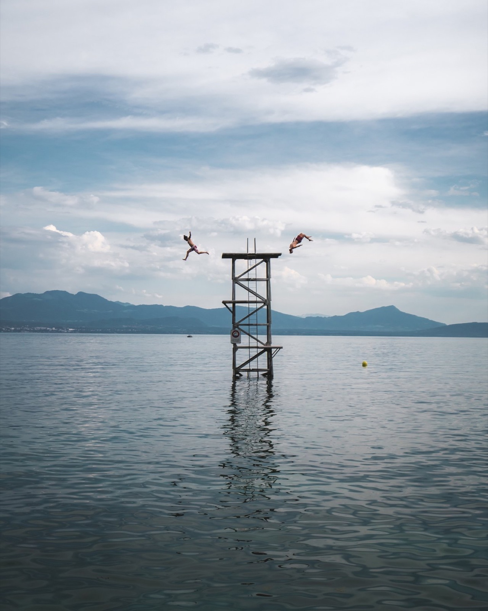
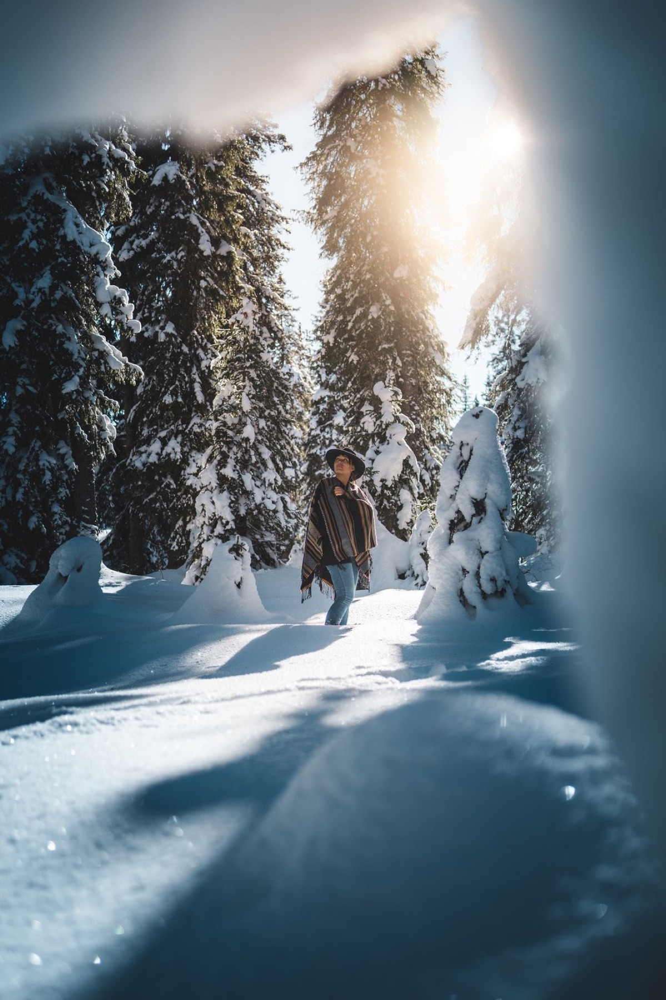
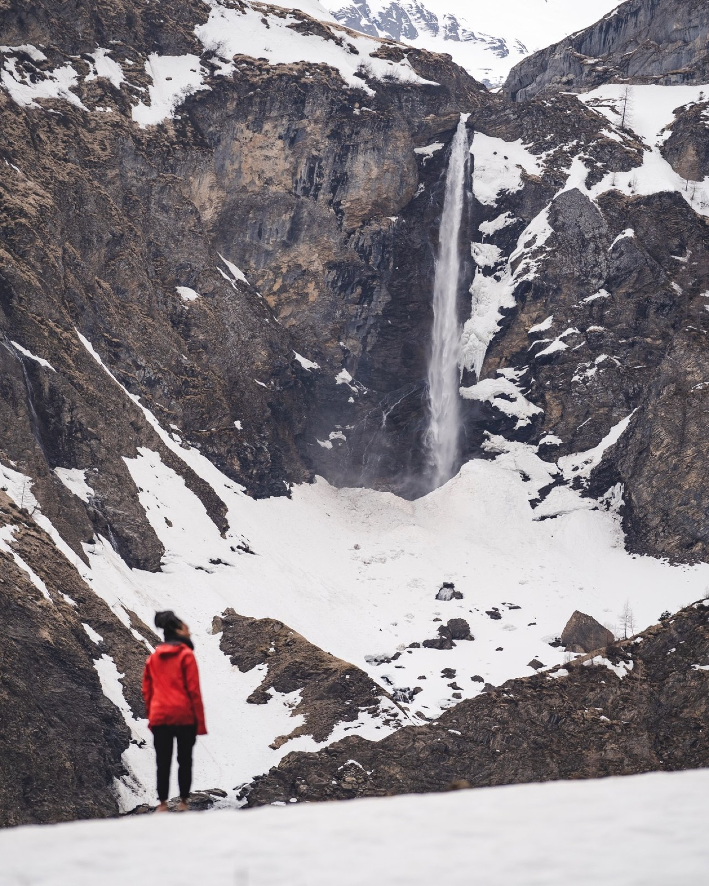

Chapter 04 · Region
The Léman arc, the Jura, and a slice of the Chablais. Vineyards down low, limestone cliffs up high, and a lake at the middle of everything. The most underrated quarter of the country for photographers.
A NARROW RIDGE ABOVE COL DE JAMAN
A knife-edge ridge you reach from Col de Jaman. The view down to Lac Léman is one of the most dramatic in the whole country.
Park at Col de Jaman (46.451752, 6.977129) and hike toward Col de Pierra-Perchia. It takes about an hour. Keep your attention on the trail. Parts of the ridge are exposed enough that a fall would be fatal.
Sunrise is the spot. Sunset works too, and you'll often get better colour over the lake then. Either way, give yourself margin to get up and down in daylight.

THE MOST PHOTOGRAPHED PEAK ABOVE MONTREUX
A small, sharp summit above Col de Jaman with an outsize view of Léman and the French Alps.
From Col de Jaman (46.451752, 6.977129), it's a straight hike up. Nothing technical, but steep enough to feel like a climb. Allow an hour each way.
Sunset is the move. The lake lights up orange, the Dents du Midi catch the last light to the east, and on a clear night you can stay up for stars.

WATERFALL HIDDEN IN THE MONTREUX CANYON
Gorges du Chauderon has a waterfall you can't see from the footpath. You'll need a drone. And patience for the weather.
The waterfall sits on the lower part of the canyon, closer to Montreux. From the path above, it's completely hidden. Launch the drone from a clearing and fly down into the gorge.
Best on cloudy or rainy days in late spring and summer. The ferns and moss go neon green, and the diffused light means no blown highlights on the water.

A REMOTE VALAIS WATERFALL
A tall waterfall above the Rhône valley. Great when the snowmelt is running hard or after spring rain.
Waterfall location: 46.202355, 7.031412. For drone shots, park and launch from 46.200456, 7.031477. The aerial perspective is where this one earns its place.
Go at the end of summer after a rainy week, or in April-May when the snow is coming off fast. Cloudy skies help the greens pop in the frame.

LEADING LINES ABOVE MARTIGNY
Shot along the same road as Pisse-Chèvre, heading toward the village of Morcles. A quiet mountain road with cinema corners.
Stop around 46.198820, 7.031182. The road curves past an opening that frames the valley below. Perfect for a car against a big landscape, or just a moody empty road shot.
Overcast days flatter this one. Strong sun kills the mood. If you're driving up to Pisse-Chèvre anyway, take an extra hour and shoot this on the way.
HUGE CLIFFS IN THE JURA
A natural amphitheatre of vertical cliffs 150m tall. Feels nothing like the rest of Switzerland.
Drive to Restaurant Le Soliat, park there, and walk to the rim. Don't run to the edge. The drop is severe and there's no railing in most places.
Sunrise is the best light, or any overcast morning when the mist pools inside the bowl. It can be booked-solid busy on sunny weekends; weekday mornings you might have it alone.

WILD IBEX, UP CLOSE
The same cliffs are home to a resident herd of ibex. If you come at the right time, you can photograph them at eye level.
Morning is your best window. They're used to hikers, so they don't spook easily, but they're still wild. No baiting, no loud voices, and keep real distance when you can.
A 200 to 400mm lens is ideal. You'll often get them silhouetted on the ridge with Mont Blanc in the background on clear days. Nothing guaranteed, but the odds are good.

A QUIET WATERFALL IN THE VAUD
A short hike to a rarely photographed waterfall. Perfect for a quick morning when you don't want crowds.
Park at 46.654948, 6.492129 and hike down. It's short and easy, good for families, and rarely busy.
Overcast is the friend here. Less contrast, better colour in the stone and moss around the falls. Bring a tripod for any long-exposure work.
AN ALPINE LAKE ABOVE LÉMAN
A small lake tucked into a bowl above the eastern end of Lake Geneva. Classic Swiss postcard if the light plays along.
Park at 46.338388, 6.848829 and hike up. The trail is obvious and not too long. Doable as a sunrise mission if you start before dawn.
Sunrise is when the lake goes glass-flat and the light hits the surrounding peaks. If you miss sunrise, overcast is the fallback for softer mood shots.
ABOVE THE LAKE, MAYBE WITH IBEX
Keep hiking past Lac de Taney and you reach Le Grammont. A summit with a direct view down onto Léman.
From Lac de Taney, the trail continues up. It's another hour or so depending on your pace. Bring water and warm layers. Exposed summit, wind is common.
You'll sometimes see ibex on the upper slopes. Sunrise is the best shot. You get the lake gold-lit and the French Alps crisp to the south.

CLIFF JUMPING INTO LAKE GENEVA
A limestone shoreline on the north side of Léman, a short train from Lausanne. The highest jump is about 7 meters.
GPS: 46.478432, 6.456433. It's a summer spot. Warm water, deep, with a great backdrop of the French Alps across the lake. Check the depth yourself before any big jump.
Afternoon is when the sun hits the water right. Bring a waterproof camera or GoPro. The 7m jump is the main draw but there are lower ledges for people easing in.
SCUBA DIVING UNDER THE QUAY
Certified divers only. Under the Quai Perdonnet, it looks like a shipwreck. With pike prowling through the pillars.
Enter the water at Vevey Plage, swim left, and go under the docks of Quai Perdonnet. Below the surface, concrete pillars create a labyrinth that feels half like a wreck, half like an underwater cathedral.
Big pike sometimes cruise through. Only experienced divers should attempt this. Visibility changes, currents matter, and being overhead-restricted in fresh water is not a beginner move.

WINTER WONDERLAND IN THE JURA
A pass in the Jura that turns into a pine-covered snow scene after a good storm. Nothing dramatic. Just perfect.
GPS: 46.564254, 6.239464. It's not a hike, it's a drive-up view. After fresh snow, the whole forest goes white and silent.
Winter only. Go the morning after a storm before the roads get ploughed wide. That's when it still looks untouched. Cloudy or blue sky both work; take whatever you get.

A LONG HIKE TO A BIG WATERFALL
A tall waterfall near Gstaad. The hike in is long, but the water in early summer makes it worth it.
Allow most of a day. The approach is well-marked but real distance. Bring food, water, and time to linger at the top.
Go in June for peak flow. Later in summer and the falls drop off hard. And out of season there might be barely any water at all.
LANDSCAPES
UNESCO terraced vineyards cascading down to Lake Leman.
The best angle is from across the lake or from the terrace paths between the vines. Autumn is peak season when the leaves change.
Park in Lavaux or take the train to Cully and walk the vineyard trails. The lake below and the Alps above make for multiple compositions.
REFLECTIONS
A reflective bog lake in the Jura, stunning at both sunrise and sunset.
This is a high-altitude wetland with a mirror-still surface. Sunrise mist and sunset alpenglow are both equally good reasons to visit.
The walk is short and easy. The composition game is all about waiting for the light and the reflections to align.

RIVERS
A cliff-top view of the Doubs river canyon above La Chaux-de-Fonds.
The river carves a dramatic canyon here. Park near La Chaux-de-Fonds and walk to the viewpoint above the gorge.
This is a Jura spot, windier and moodier than alpine areas. Overcast light really suits it - or catch the sunset when the canyon walls glow.